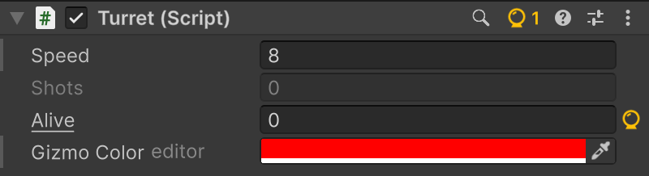

And which ones only the Editor uses.
public float «speed» = 8; int «shots»; public static int «alive»; public Color «gizmoColor» = Color.red; #if UNITY_EDITOR void OnDrawGizmos() => Gizmos.color = gizmoColor; #endif
